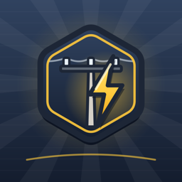

Şebeke UstasıElektrik dağıtımını oynayarak öğren. Santralden kasabaya hat çek, trafo kur, arızaları ekip göndererek gider, bakım için yükü başka hatta aktar. Sayaç bağlama, iş güvenliği ve SCADA bölümleri; şebeke malzemelerini, yönetmelik kurallarını ve hesapları anlatan çizimli saha kılavuzu ve sınavlar. İnternet gerekmez; bütçe yetmezse isteğe bağlı ödüllü reklam.
Learn power distribution by playing. Run lines from the plant to the towns, place transformers, send crews to clear faults and switch load to another feeder for maintenance. Meter wiring, work safety and SCADA chapters, plus an illustrated field guide on grid equipment, rules and calculations, with exams. Works offline; optional rewarded ads when the budget runs short. (Game language: Turkish.)
Platforms: iOS · Android